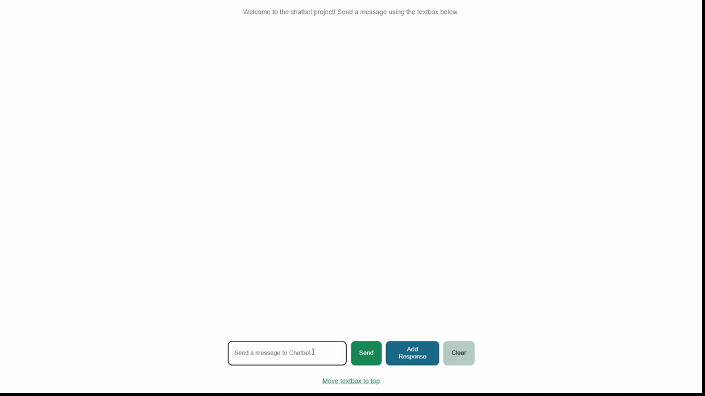
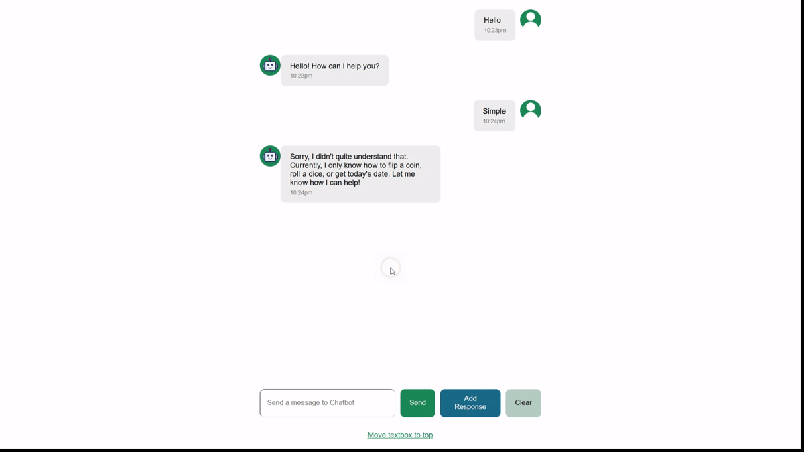
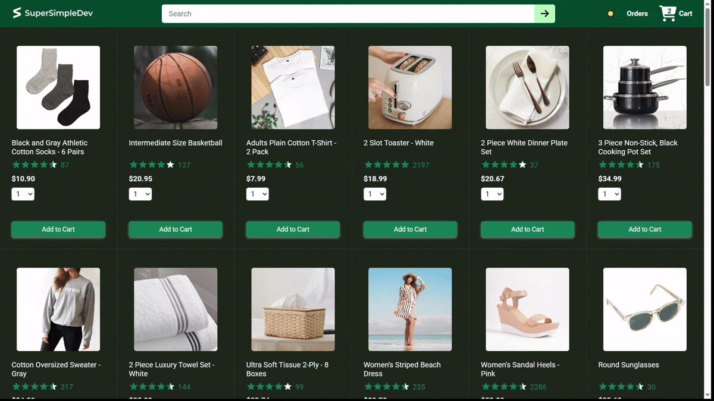
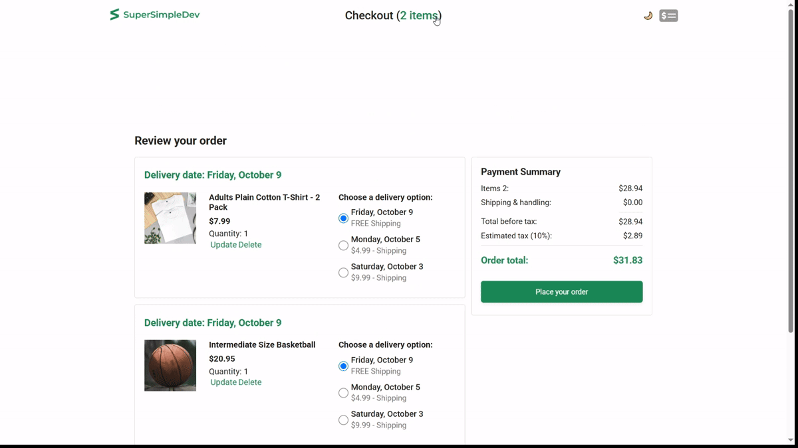

About the project
The two projects included are: Chatbot Project — a React-based chatbot interface. Ecommerce Project — a React/JavaScript/TypeScript ecommerce application.
I have made additional modifications and implemented several features of my own to each project, but much of the implementation is based on the course material and is not my original work.
Demos
Below you can find some demos that highlight the features that I added to each project
Chatbot Project demos
1. The demo below highlights the functionality of the "Add Response" button and shows how to use the modal that appears after clicking the button.

2. The demo below highlights the verification of the response for the specific prompt entered before, the ability to navigate through previously entered user messages by pressing the ↑ and ↓ keys, and the deletion of chat history by clicking the "Clear" button.

Live Demo
You can also test the app yourself by visiting this LinkEcommerce Project demos
1. The demos below highlight the functionality of the dark mode button, the persistence of the theme across all pages and even after reloading a page, and the functionality of the Scroll-to-Top button that appears after scrolling below a specific threshold.


View repository on GitHub ↗